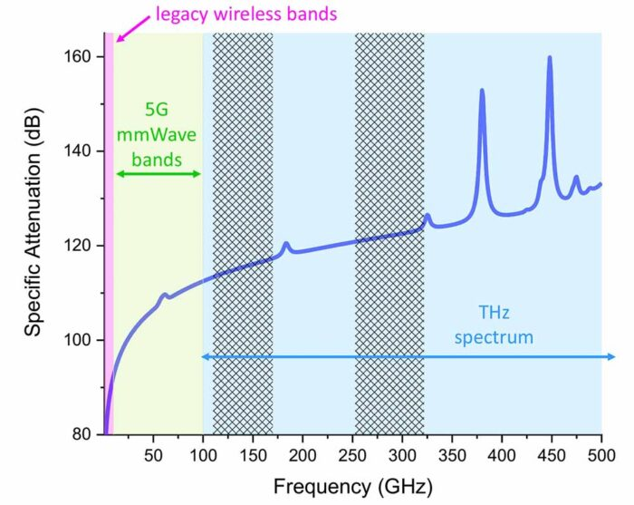
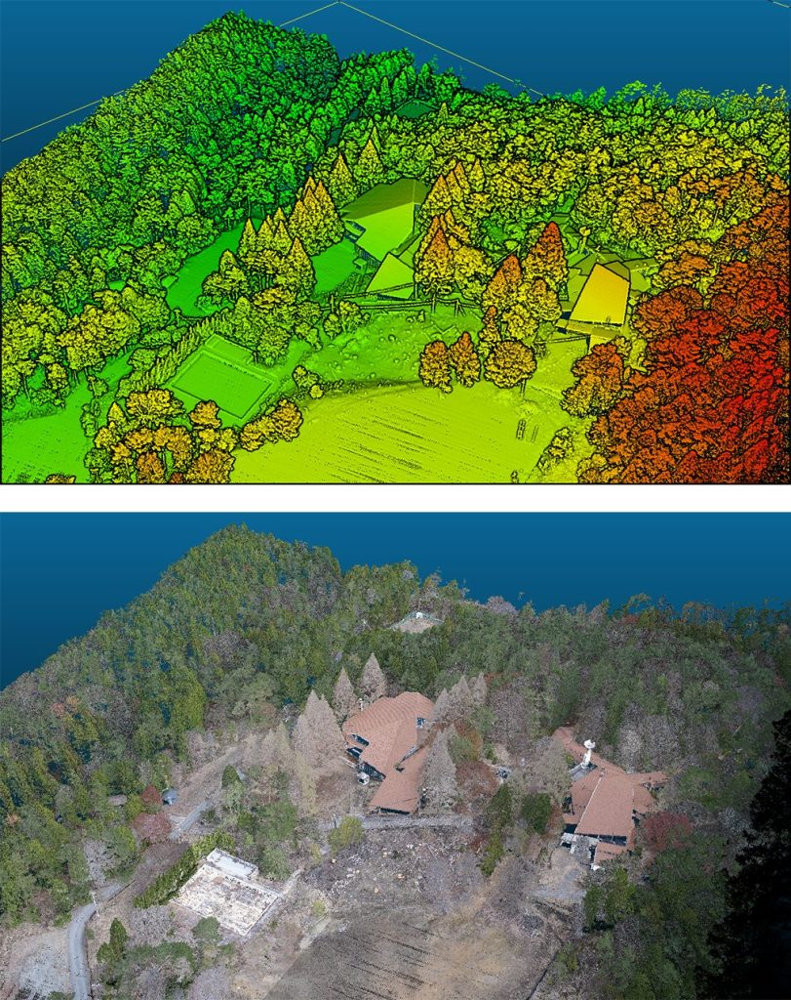

Research Focus Areas

mmWave & THz Communication
High-frequency propagation modeling (28–300 GHz), directional beamforming, blockage analysis, material reflection profiling, and digital-twin construction for robust 6G wireless systems.
- Beam alignment and beam search optimization
- Propagation modeling & NLoS conditions
- Material scattering and absorption analysis

Radar–LiDAR Aided Sensing
3D sensing for environment reconstruction, surface classification, scatter characterization, and multi-modal sensing fusion for intelligent wireless environments.
- 3D point-cloud processing
- Material classification & reflectivity modeling
- Radar–LiDAR fusion for wireless optimization
Machine Learning for Wireless
AI-driven algorithms that enhance wireless reliability, predict beam directions, model complex propagation environments, and enable real-time 6G decision systems.
- Deep learning for beam prediction
- Graph-based and geometric ML models
- Environment-aware wireless optimization